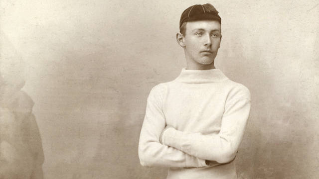
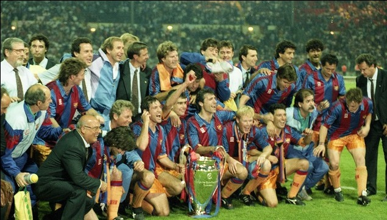

FC Barcelono je leta 1899 ustanovil Švicar Joan Gamper. V časopisu je objavil oglas, s katerim je poiskal nogometaše, in v enem mesecu se je zbralo 11 igralcev: Otto Kunzle, Walter Wild, John Parsons, William Parsons, Otto Maier, Lluís d’Ossó, Bartomeu Terradas, Enric Ducal, Pere Cabot, Carles Pujol in Josep Llobet. Skupaj so 29. novembra 1899 ustanovili klub, ki so mu nadeli ime in grb mesta Barcelona.
Barça je svojo prvo tekmo odigrala na Bonanovi proti angleškim izseljencem in izgubila z 1-0, a je v kasnejših letih svoje domače prizorišče večkrat menjala. Prvič se je ustalila na stadionu Industria, kjer je domovala 13 let. Leta 1922 je otvorila nov stadion Les Corts, ki je takrat veljal za enega najbolj sodobnih. Les Corts je bil priča prvi zlati generaciji Barçe na čelu z izvrstnimi Josepom Samitierjem, Paulinom Alcantaro in Ricardom Zamoro. S svojo igro in dosežki so privabili množico navijačev in leta 1924 je katalonski klub imel že več kot 12.000 registriranih članov. Pomemben korak je Barça storila v sezoni 1928/29, ko se je v zgodovino zapisala kot prva ekipa, ki je osvojila špansko prvenstvo. Zbrala je 25 točk, dve več kot drugouvrščeni Real Madrid.
Dream TeamLeta 1988 se je v Barcelono vrnil legendarni Johan Cruyff, tokrat v vlogi trenerja. Z njim sta se v katalonsko moštvo vrnilatudi dober nogomet in športni uspeh. Skupaj s pomočnikom Rexachom je sestavil ekipo nogometašev, ki so zagotavljali spektakel, in ponovno napolnili CampNou. FC Barcelona je pod vodstvom nizozemskega stratega med letoma 1990 in 1994 štirikrat zapored osvojila špansko ligo. Vrhunec je njegova ekipa dosegla leta 1992, ko je osvojila svojo prvo Ligo prvakov. Sanje Barçinih privržencev so se uresničile 22. maja 1922 na stadionu Wembley. V 111. minuti finala je branilec Ronald Koeman z izjemnim strelom zatresel mrežo Sampdorie in se zapisal med nesmrtne legende katalonskega moštva.
